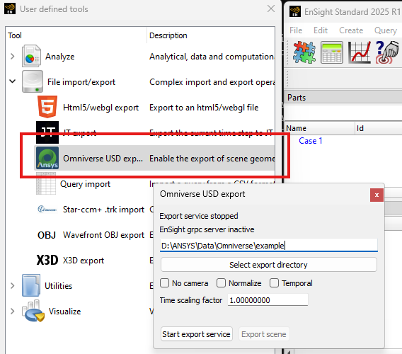
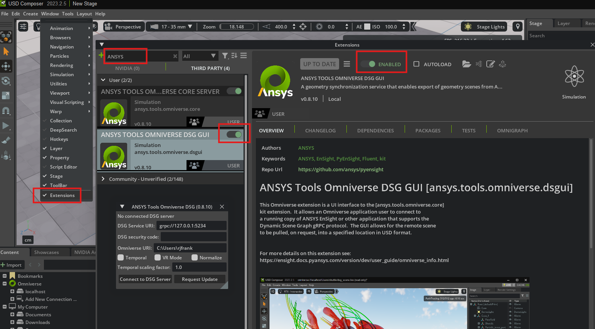

PyEnSight/ANSYS Omniverse Interface#
This release of PyEnSight includes an interface to export the surfaces in the current EnSight scene to an Omniverse server. This functionality is was developed against the “203” (2023.x) version of Omniverse. Other versions may or may not work. The interface supports EnSight 2023 R2 or later.
The API is available through a PyEnSight session instance, from EnSight Python directly as (ensight.utils.omniverse for 2025 R1 and later) and from within Omniverse applications via the ansys.tools.omniverse.core and ansys.tools.omniverse.dsgui kit extensions.
The Python API is defined here: Omniverse.
PyEnSight and EnSight Python API#
If you are using the ansys-pyensight-core module in your own python, one can just use the API like this:
from ansys.pyensight.core import LocalLauncher
s = LocalLauncher(batch=False).start()
s.load_example("waterbreak.ens")
# Start a new connection between EnSight and Omniverse
directory = "/omniverse/examples/water"
s.ensight.utils.omniverse.create_connection(directory)
# Do some work...
# Push a scene update
s.ensight.utils.omniverse.update()
Note
The batch=False option used in the examples causes the EnSight
GUI to be displayed together with the Omniverse Composer GUI.
It is possible to run a pyensight script from inside of an Omniverse kit application. In this case, care must be taken to close the EnSight session before exiting the Omniverse application hosting the PyEnSight session or is it possible to leave the EnSight instance running.
From inside an EnSight session, the API is similar:
# Start a DSG server in EnSight first
(_, grpc_port, security) = ensight.objs.core.grpc_server(port=0, start=True)
# Start a new connection between the EnSight DSG server and Omniverse
options = {"host": "127.0.0.1", "port": str(grpc_port)}
if security:
options["security"] = security
directory = "/omniverse/examples/water"
ensight.utils.omniverse.create_connection(directory, options=options)
# Do some more work...
# Push a scene update
ensight.utils.omniverse.update()
After running the script, the scene will appear in any Omniverse kit tree view
under the specified directory. The file dsg_scene.usd can be loaded into
Composer. The ensight.utils.omniverse.update() command can be used to update
the USD data in Omniverse, reflecting any recent changes in the EnSight scene.
Starting with 2025 R1, one can also access Omniverse via an EnSight user-defined tool:

Clicking on “Start export service” executes something
similar to the previous Python snippet and the button will change to
a mode where it just executes ensight.utils.omniverse.update()
when the “Export scene” button is clicked.
Note
Several of the options are locked in once the service is started. To change options like “Temporal”, the service must often be stopped and restarted using this dialog.
PyEnSight/Omniverse kit from an Omniverse Kit Application#
To install the service into an Omniverse application, one can install
it via the third party extensions dialog. Select the Extensions option
from the Window menu. Select third party extensions and filter
by ANSYS. Enabling the extension will install the kit extension.
The kit extension will find the most recent Ansys install and use the
version of the pyensight found in the install to perform export
operations.

The ansys.tools.omniverse.dsgui kit includes a GUI similar to the
EnSight 2025 R1 user-defined tool. It allows one to select a
target directory and the details of a gRPC connection
to a running EnSight. For example, if one launches EnSight with
ensight.bat -grpc_server 2345, then the uri: grpc://127.0.0.1:2345
can to used to request a locally running EnSight to push the current
scene to Omniverse.
Note
If the ansys.tools.omniverse.core and ansys.tools.omniverse.dsgui
do not show up in the Community extensions list in Omniverse, then
it can be added to the Extension Search Paths list as:
git://github.com/ansys/pyensight.git?branch=main&dir=exts.
Developers: Running via the Command Line#
There is an omniverse_cli module included in the pyensight install.
This module can be used to execute any service operation from the
command line. The Python included in the EnSight distribution
includes this module as well. Assuming the pyensight repo has been
cloned to: D:\repos\pyensight the following can be run in a
Python virtual environment that was used to build the module and
has it installed:
cd "D:\repos\pyensight"
.\venv\Scripts\activate.ps1
python -m build
python -m pip install .\dist\ansys_pyensight_core-0.9.0.dev0-py3-none-any.whl
python -m ansys.pyensight.core.utils.omniverse_cli -h
Will generate the following output:
Documenting the various command line options. To start the server, specify the destination directory
where the resulting USD files should be saved and provide the correct URI to the --dsg_uri option
needed to connect to the EnSight DSG server. The service will continue to monitor the EnSight
session, pushing geometry updated as specified by the EnSight session until the EnSight session
is stopped. If only a single download/conversion is desired, the --oneshot 1 option may be specified.